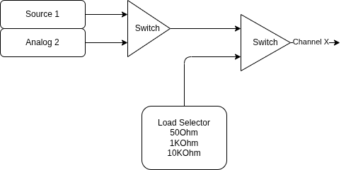
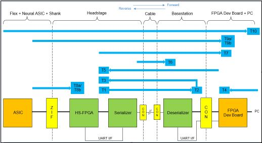
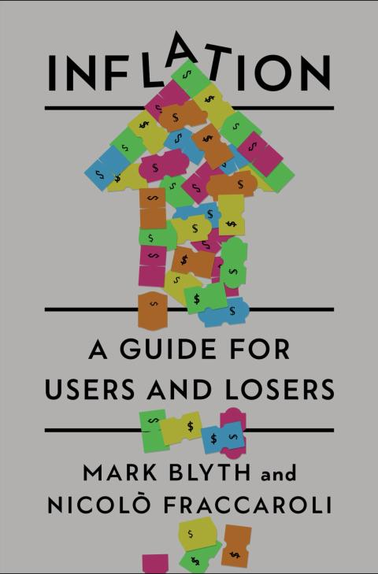
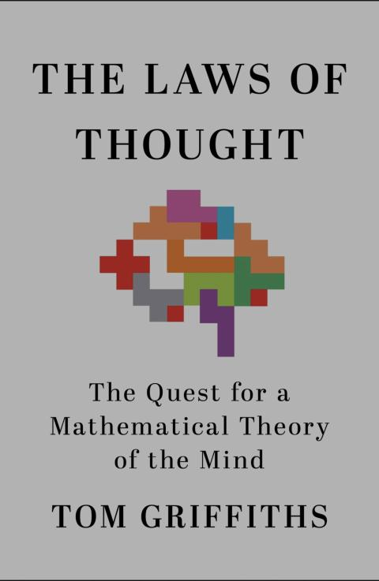
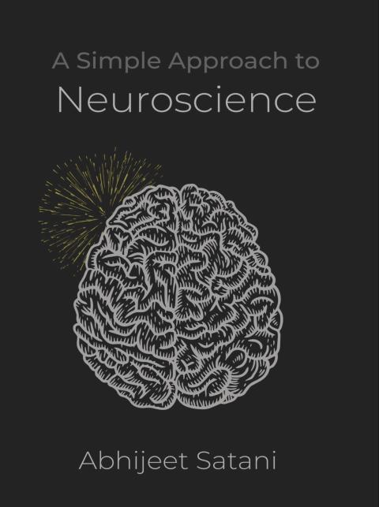
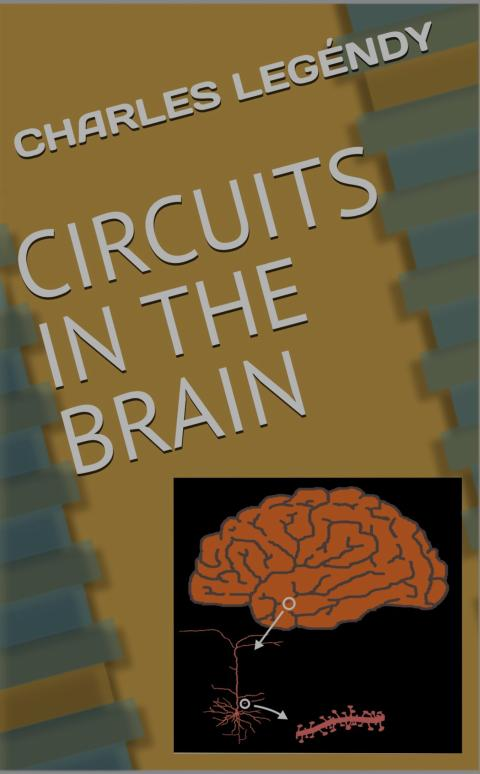
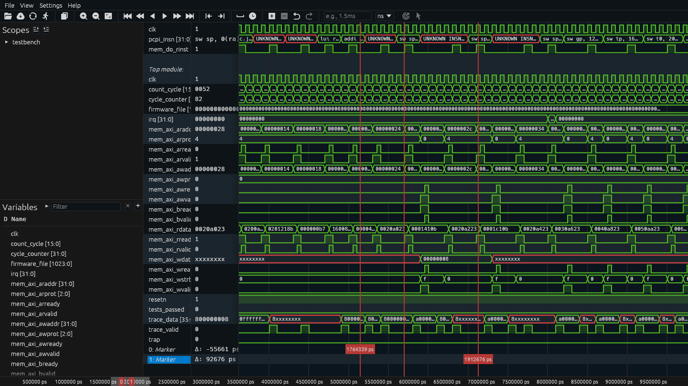
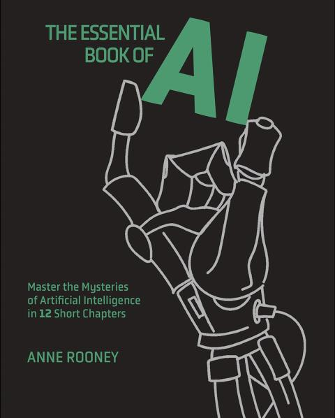

2026-05
2026-05-29 Friday 🌐 🎬 💾 📚 📑 🔬
Logic Before Language
2026-029
Well, logic is based on language.
This book is as verbose as an llm.
And the RTR stuff is also just words.
Analog Input

2026-05-28 Thursday 🌐 🎬 💾 📚 📑 🔬
NeuroPixel Built-in Self Tests (BIST)

AI and AI user must read, Element of Style
最近看了一些關於AI的書 可能是使用太多AI 囉唆的要命
好像有點什麽重點 卻說不出個所以然 只是那邊晃來晃去
2026-05-27 Wednesday 🌐 🎬 💾 📚 📑 🔬
AI Say, I ask AI.
Church Say, I ask Priest.
AI became Bible, Religion, Authority
2026-05-26 Tuesday 🌐 🎬 💾 📚 📑 🔬
Productive Trick
Take boring Break
Inhabit the in between
Do one thing at a time
Inflation

2026-028
RWD LED Power 0-100uW
RHD VESD
The VESD pin should normally be tied to ground for safety and noise reasons. A high-energy ESD event could potentially short out any ESD diode. If VESD is tied to ground, then severe damage to any diode will only short the associated electrode to ground. Since any tissue contacted by electrodes should be grounded, no DC current will flow into the tissue. If, instead, VESD is tied to a voltage above ground, no significant current will flow under normal conditions since the corresponding diode will be reverse biased. However, if that diode is damaged in an ESD event, the voltage at VESD will be tied directly to the electrode, possibly resulting in high DC currents and tissue damage.
2026-05-25 Monday 🌐 🎬 💾 📚 📑 🔬
LED power tuning for fiber photometry
🌐LED power tuning for fiber photometry
Acquiring Head Orientation through using an IMU with Madgwick Orientation Filtering
Acquiring Head Orientation through using an IMU
Towards Low-Latency Event-based Obstacle Avoidance on a FPGA-Drone
Towards Low-Latency Event-based Obstacle Avoidance on a FPGA-Drone
Seeing the World Differently: How FPGA and Event-Based Vision are Transforming Robotics
Seeing the World Differently: How FPGA and Event-Based Vision are Transforming Robotics
ASTEF: FPGA-Based Enhancement of Event Camera Performance in Low-Light Conditions
📑ASTEF: FPGA-Based Enhancement of Event Camera Performance in Low-Light Conditions
Combined Physics and Event Camera Simulator for Slip Detection
📑Combined Physics and Event Camera Simulator for Slip Detection
Real-time event simulation with frame-based cameras
📑Real-time event simulation with frame-based cameras
ESIM: an Open Event Camera Simulator
AI Edge Gallery Agent Skills
LiteRT-LM
LiteRT-LM is Google's production-ready, high-performance, open-source inference framework for deploying Large Language Models on edge devices.
Fully Fine-tune a Small Language Model with Hugging Face Tutorial
Fully Fine-tune a Small Language Model with Hugging Face Tutorial
2026-05-22 Friday 🌐 🎬 💾 📚 📑 🔬
Toolboxes for GenAI on AMD Ryzen AI MAX+
🌐Toolboxes for GenAI on AMD Ryzen AI MAX+
💾AMD Strix Halo Llama.cpp Toolboxes
Event-based Vision Resources
Gemma 4 31B, 26B, and E4B on AMD Ryzen AI Max+ 395 (Strix Halo) via Vulkan (or ROCm) with Kubernetes (or Docker)
DwarfStar 4 is a small native inference engine specific for DeepSeek V4 Flash
DwarfStar 4 is a small native inference engine specific for DeepSeek V4 Flash. It is intentionally narrow: not a generic GGUF runner, not a wrapper around another runtime: it is completely self-contained. Other than running the model in a correct and fast way, the project goal is to provide DS4 specific loading, prompt rendering, tool calling, KV state handling (RAM and on-disk), server API and integrated coding agent, all ready to work with coding agents or with the provided CLI interface. There are also tools for GGUF and imatrix generation, and for quality and speed testing.
High altitude / Mid altitude / Low altitude Defence Strategy
Mass Destruction / Minimum Destruction
Missile Bomber / Drone
2026-05-21 Thursday 🌐 🎬 💾 📚 📑 🔬
PCB Bypass Cap


🌐https://www.protoexpress.com/blog/decoupling-capacitor-use/
🌐https://www.protoexpress.com/blog/decoupling-capacitor-placement-guidelines-pcb-design/
The Law of Thought

2026-027
Personal Drone Detection
📑FRED: The Florence RGB-Event Drone Dataset
📑Drone Detection with Event Cameras
📑Neuromorphic Drone Detection: an Event-RGB Multimodal Approach
📑A NEW STEREO FISHEYE EVENT CAMERA FOR FAST DRONE DETECTION AND TRACKING
📑Real-Time Drone Detection in Event Cameras via Per-Pixel Frequency Analysis
📑Event-Based Vision Application on Autonomous Unmanned Aerial Vehicle
2026-05-19 Tuesday 🌐 🎬 💾 📚 📑 🔬
Build and Debug QEMU in Docker
🌐Build and Debug QEMU in Docker
For an university research project we are implementing a software simulator for the EZH (or SmartDMA) co-prozessor present on some NXP MCUs.
美創投家稱「18個月後台灣不重要」挨批低估情勢
或許時間不一定對 不過我覺得在世人的眼光中是這樣
台灣不過是 隔海有晶片廠的加薩
2026-05-18 Monday 🌐 🎬 💾 📚 📑 🔬
十大網路討論度最高的失智症前兆
十大前兆包括：
-
言語表達或書寫出現困難。
-
情緒與個性改變。
-
記憶力減退影響生活。
-
無法勝任原本熟悉的事務。
-
對時間或地點感到混淆。
-
理解視覺影像與空間關係困難。
-
東西擺放錯亂且無法回溯尋找。
-
日常生活判斷力與警覺性減弱。
-
計畫事情或解決問題能力下降。
-
社交退縮或對愛好活動失去興趣。
2026-05-14 Thursday 🌐 🎬 💾 📚 📑 🔬
PICO SPI in Arduino IDE is 8 bits every cs
"The Israelis are panicked" about the high-tech, low-cost drones Hizballah is using
2026-05-13 Wednesday 🌐 🎬 💾 📚 📑 🔬
UniversalPpsAnalyzer
The PPS Analyzer is specifically designed for Plugfests where multiple devices are synchronizing each other, and the accuracy of the individual devices shall be measured via PPS (offset from reference PPS).
FPGA / ASIC 設計を加速するモデルベースデザイン (1)
📑FPGA / ASIC 設計を加速するモデルベースデザイン (1)
📑FPGA / ASIC 設計を加速するモデルベースデザイン (2)
A Simple Approach to Neuroscience

2026-026
2026-05-12 Tuesday 🌐 🎬 💾 📚 📑 🔬
GadgetSci MCA
An open source 4096-channel signal analyzer for silicon photomultiplier gamma spectroscopy
GadgetSci MCA is a compact, high-resolution multichannel signal analyzer designed for real spectroscopy applications. It pairs with a silicon photomultiplier (SiPM) detector to deliver laboratory-grade performance in a desktop setup.
UV
UV Commands
Project setup
uv init myproject # Create new project
uv add requests # Add dependency
uv remove requests # Remove dependency
uv sync # Install from lockfile
Running code
uv run script.py # Run in project environment
uv run pytest # Run tests
Python management
uv python install 3.12 # Install Python version
uv python pin 3.12 # Set project Python
Tool usage
uvx black . # Run tool temporarily
uv tool install ruff # Install tool globally
Package management (pip-compatible)
uv pip install requests # Direct pip replacement
uv pip install -r requirements.txt
UV Kickstart
- uv init project_folder_name
- uv add package_name
- uv add package_name --dev
after UV -> Git
- git init
- git add .
- git commit -m "Initial commit"
Create new repo with GitHub CLI
- gh repo create my-project --private --source=. --remote=origin --push
2026-05-11 Monday 🌐 🎬 💾 📚 📑 🔬
Circuit In The Brain

2026-025
沒看完 中間lost track 變得很難閱讀下去
2026-05-08 Friday 🌐 🎬 💾 📚 📑 🔬
OneBox = Zynq + FT601 + AD7616 + Serdes
2026-05-07 Thursday 🌐 🎬 💾 📚 📑 🔬
LiveHD and Pyrope another HDL
LiveHD is the compiler infrastructure that allows to work with Hardware Description Languages (HDLs) like Verilog, CHISEL, and Pyrope.
Pyrope is the new HDL built on top of LiveHD.
Hardware Design provides an introduction to hardware design for software designers.
2026-05-06 Wednesday 🌐 🎬 💾 📚 📑 🔬
wellen provides a common interface to read both FST and VCD waveform files.
wellen provides a common interface to read both FST and VCD waveform files. The library is optimized for use-cases where only a subset of signals need to be accessed, like in a waveform viewer. VCD parsing uses multiple-threads.
Spade is a hardware description language inspired by modern software languages.
Spade is a hardware description language inspired by modern software languages.
Surfer Waveform Viewer

ZeroASIC
It’s been nearly 50 years since Mead and Conway launched the first VLSI Revolution, sparking decades of extraordinary innovation and growth. Unfortunately, over the last 15 years, chip design has become a rich man’s game requiring thousands of specialists and up to $1 billion in per project funding. We believe the industry is long overdue for a second chip design revolution!
🌐Mead–Conway VLSI chip design revolution
PlatypusTM is a family of standardized embedded FPGA (eFPGA) IP cores.
embedded FPGA (eFPGA) IP cores
Wildebeest open-source RTL synthesis tool
The Wildebeest project is an open-source RTL synthesis tool that builds on the mature Yosys platform and extends it with advanced logic synthesis algorithms for state-of-the-art quality of results (QoR).
VTR
BaseJump FPGA IP

Pico to Pico Connection over PIO
Verilog Name Convention
- Port : name_in, name_out
- Signal : s_name, s_name_n, s_name_next
- Variable : v_name, v_name_n
- Constant : c_name
The Essential Book of AI

2026-024
Entropy-rich data
Entropy-rich data refers to datasets characterized by a high degree of randomness, disorder, unpredictability, or structural complexity. In information theory, such data contains a high amount of information (Shannon entropy), meaning it is less redundant and less predictable than structured data. [1, 2]
2026-05-05 Tuesday 🌐 🎬 💾 📚 📑 🔬
Open Ephys Commutator Manual
PICO SPI
2026-05-04 Monday 🌐 🎬 💾 📚 📑 🔬
AI Chatbots: Last Week Tonight with John Oliver (HBO)
🎬AI Chatbots: Last Week Tonight with John Oliver (HBO)
Zuspec: Pythonic Model-Driven Hardware Development
Zuspec, a portmanteau of zusammen (German for “together”) and specification, is a Python-based multi-abstraction hardware modeling language and a suite of tools for working with Zuspec models.
Abstract - Designing and implementing hardware is challenging, and is getting more difficult each year as systems become more complex. Design and verification teams are looking to boost productivity as a way to keep pace, while also looking for ways to provide models of the design behavior to software teams earlier. The fragmented and esoteric nature of the languages and methodologies used for design and verification only make this more difficult. Zuspec is a unified, extensible Pythonic framework for multi-abstraction hardware modeling that simplifies the design and verification process and enables traditional and AI-driven automation.
The introduction of the Iomega Clik drive
7 Way to Burn your Money on Hardware Prototype
If you want to burn big bucks on your hardware prototype, it's easier than you think. Just do these 7 things.
1/ Think an Arduino demo is a real prototype
It's not. It proves your idea works on a $30 dev board. It tells you nothing about real power consumption, heat, or signal performance. For that, you need a PCB with proper industrial-grade components.
2/ Assume the first PCB run will work
It almost never does. Factory trace tolerances interact with physics in ways no simulation fully captures. This is normal and manageable as long as you budgeted for a second run.
3/ Ignore the enclosure until it's too late
Custom enclosure means a custom mold. That mold costs tens of thousands before you've made a single unit. Most clients don't see this coming because nobody quoted it upfront.
4/ Skip field testing
One device was built for two button presses a day. Users pressed it 22 times. The seal died in two months, moisture got in, devices started shorting. A small field test would have caught it, but they skipped it to save time.
5/ Take forever to decide
Classic.
6/ Try to validate everything in one prototype
A prototype answers specific questions, not all of them at once. When scope creeps into the prototype phase, timelines stretch, costs climb, and the feedback you get is muddied.
7/ Forget about DFM
Design for manufacturing is a big part a lot of clients and vendors don’t take into account. You send a schematic, the factory tells you they can't make the traces that thin, or that component isn't in their inventory, or that via placement conflicts with their process. You revise, they review, you revise again. It can add weeks to a prototype run.
The whole point of a prototype is to find problems before they get expensive. And skipping corners in prototyping makes it more and more expensive.
- xxx 1/ Think an Arduino demo is a real prototype
- xxx 2/ Assume the first PCB run will work
- ooo 3/ Ignore the enclosure until it's too late
- xxx 4/ Skip field testing
- ooo 5/ Take forever to decide
- xxx 6/ Try to validate everything in one prototype
- xxx 7/ Forget about DFM
Wearable LiDAR Spatial Audio Navigator for Visually-Impaired Individuals
Wearable LiDAR Spatial Audio Navigator for Visually-Impaired Individuals